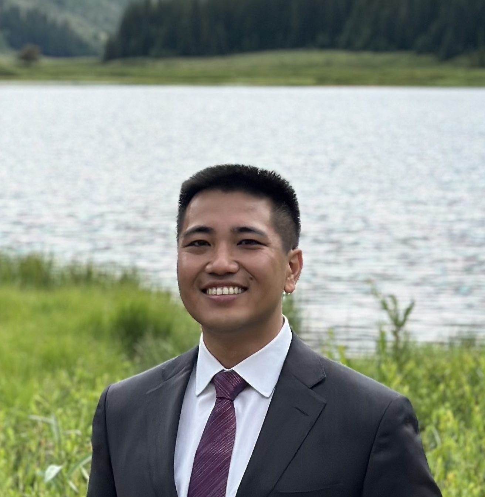

Yumehiko "Yume" Hoshijima
Hello! I'm Yume (pronounced "you may"), an attorney based in San Francisco, California. I work for Sher Edling LLP, where I represent states, local governments, and other public entities across the United States in high-impact, public-interest climate change and environmental litigation.
I was born in Japan and grew up in San Diego. I moved east to attend Yale College (B.A. 2015), the Yale School of the Environment (M.E.M. 2019), and Yale Law School (J.D. 2019), where I was an editor of the Yale Law Journal, a heavily involved clinical student, and an inaugural John Kerry Fellow. Then, I clerked for the Honorable John A. Kronstadt of the U.S. District Court for the Central District of California (2019–20) and the Honorable Scott M. Matheson, Jr. of the U.S. Court of Appeals for the Tenth Circuit (2020–21) before joining Sher Edling.
In my spare time, I spend lots of time outdoors: I train for standard-distance triathlons, and I explore the Bay Area's numerous parks. I'm a news junkie who prizes and hoards interesting and occasionally useful information. If not for my belief that today's grave environmental problems require legal responses, I would have been an engineer: I'm fascinated by complicated machines, civil infrastructure, and technology in general.
Please don't hesitate to get in touch at yume.hoshijima [at] aya.yale.edu.